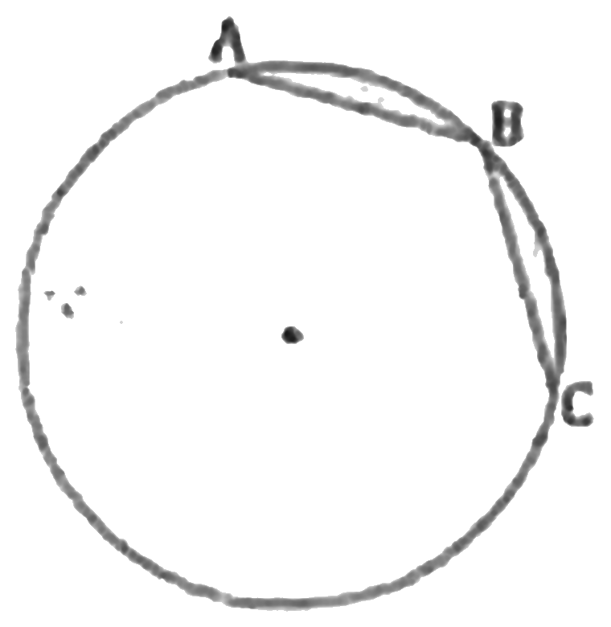
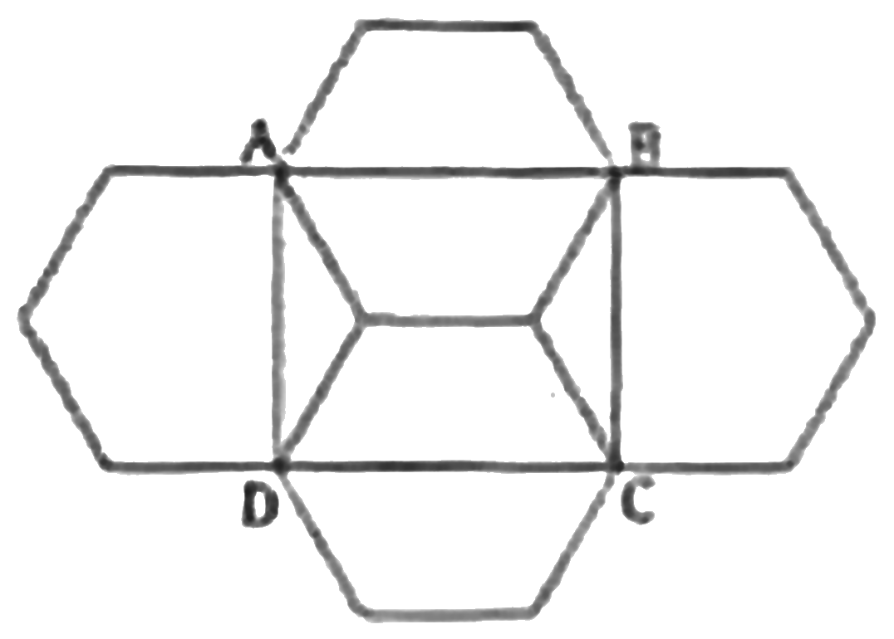
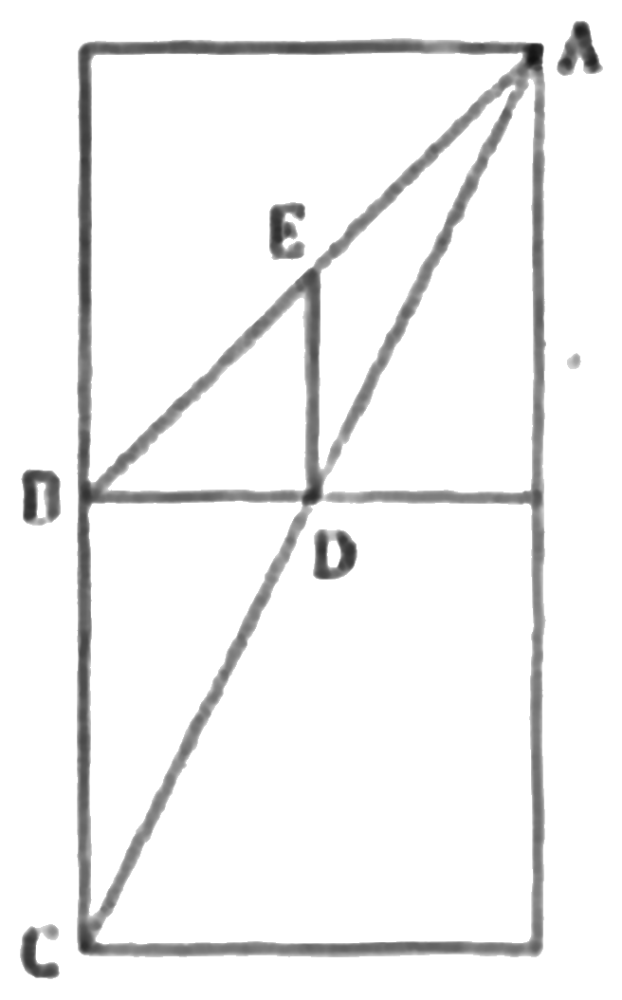
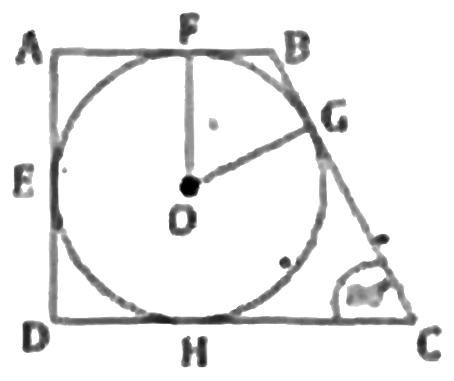

מספר קלפי הפוקימון של רוני גדול ב־50% ממספר קלפי הפוקימון של יואי. לאחר שרוני העבירה 15 קלפים ליואי נוצר שוויון במספר הקלפים שלהם.
כמה קלפים היו לרוני לפני ההעברה?

בסרטוט שלפניכם מעגל שמרכזו O ורדיוסו 2 ס"מ. נתון: AB = BC, הקשת AC (הקצרה) מהווה ⅓ מהקשת AC (הגדולה).
בהסתמך על נתון זה ונתוני הסרטוט, מה סכום שני השטחים האפורים (בסמ"ר)?
||x² − 1| + 6| = 10
מה יכול להיות ערכו של x?
חרק התיישב על גלגל אופניים שרדיוסו חצי מטר. בעת רכיבה ממוצעת מסתובב הגלגל 40 סיבובים בדקה. בהנחה ובעת יוסי יצא עם האופניים לרכיבה, מהי הדרך שעבר החרק בשעה (במטרים)?

בסרטוט שלפניכם ארבעה משושים משוכללים חופפים שאורך צלעם 2 ס"מ שהוצמדו זה לזה.
על פי נתונים אלו ונתוני הסרטוט, שטח המלבן האפורהשטח הלבן = ?
נתון: 1 < x , y מספר טבעי.
איזה מהאי־שוויונות הבאים בהכרח אינו נכון?
שי מנסר עצים בנגריה בקצב מסוים. אם יצטרף אליו רוי, קצב ניסור העצים יגדל פי 3. אם תצטרף אליו בר, קצב ניסור העצים יגדל פי 5.
פי כמה יגדל קצב ניסור העצים של שי אם יצטרפו אליו רוי ובר יחדיו?
אוטובוס יוצא מקריית שמונה לכיוון באר שבע. באותו הזמן בדיוק יוצא, במהירות הגבוהה ב־20%, אוטובוס מבאר שבע לכיוון קריית שמונה. אם המרחק בין קריית שמונה לבאר שבע הוא 330 ק"מ, באיזה מרחק (בק"מ) מבאר שבע יפגשו האוטובוסים?

בסרטוט שלפניכם שני ריבועים בעלי צלע משותפת. נתון: BE = EA.
על פי נתונים אלו ונתוני הסרטוט, שטח משולש BDEסכום שטחי המשולשים ADE ו־BCD = ?

בסרטוט שלפניכם טרפז ישר זווית ABCD (AB ∥ CD , AD ⊥ DC). בטרפז חסום מעגל שמרכזו O. המעגל משיק לטרפז בנקודות H, G, F ו־E. נתון: AF = 2 ס"מ.
על פי נתונים אלו ונתוני הסרטוט, מה היקפה של הגזרה OFG (בס"מ)?
⚠ השברים בתשובות קטנים – נקראו בקירוב.